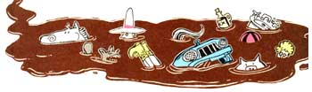

Illustration By Peter Kuper
It won't be warm till the snow gets off the mountain, and the snow won't get off the mountain till it gets warm.
-Vermont Proverb
Well sir, the next place the good fellas of the Plumtree Crossing General Assembly headed on their railroad travels (started, as you might recall, in issue 102) was up to Ott Bartlett's cousin's farm in Harwick, Vermont. They got off the train in Montpelier, talked a used-car salesman into renting them a beat up blue pick-up, and then headed north. Ott drove, Newt Blanchard navigated, and all the other fellas rode in the back "to give 'er traction."
They call March mud month up in New England, and the roads was slicker'n deer guts on a doorknob. Ott skirted round one particularly bad mudhole that had a hat sitting on top of it. Lafe Higgins wanted to jump out and retrieve the hat-till he saw it moving and realized it was a man on horseback!
"Ott," Newt asked as the roads winded by, "you gonna be able to find your cousin's farm?" "Why, sure," Ott replied, "I'll just head north till we smell it, and then go west till we step in it."
They got some turned around, though, till even Ott had to admit defeat. He pulled the truck over and hailed a farmer. "Do you know where Hiram Bartlett lives?"
"Yup," came the reply.
"Mind telling us where?"
"Nope."
"Well then, where is it?"
"Top of the hill there."
"Know if he's home?"
"Nope, he ain't to home. What you want with him?"
"I'm his cousin from Plumtree Crossing."
"What's he want with you?"
"Maybe this," Ott said, holding up a jug of Purvis Jacob's prize home-squeezed elixir.
"I be Hiram."
"I figured you was a hick from somewhere," Ott said.
Hiram led the fellas on up to his house, stoked up the kitchen woodstove, and then sat down to commence drinking. It took quite a few rounds to loosen up the Vermonter's tongue (some things get rusty if you don't use 'em much). But once he got it going, Hiram explained just why Vermonters are so standoffish to outsiders.
By the Old Lord Harry (Hiram commenced), these days we got more summer complaints-that's tourists, you know than black flies. And we north folk tend to be loners to begin with. Like Roscoe Munger, farmer next door. Aw, we've how died each other for over thirty years. But one day, I got kinds carried away and added, "How you getting on these days?" "None of your damned business," Roscoe replied. "And I wouldn't tell you that much if you wasn't an old friend."
We don't care that strongly for folks who've only lived here a couple dozen years. "I know you people will never consider me a native," one of them told me, "but my children were all born here. So that makes them real Vermonters, right?"
"Well," I replied, "if a cat had her kittens in the oven, would you call 'em biscuits?"
And them flatlanders that come up here, they're the worst of all. Oh, I tried to get along with one once-a professor who rented the cabin across the road. Finally, the day he was leaving, he dropped by to say good-by. "Well, how'd you like Vermont?" I asked him.
"Oh, I think it's a great place. Beautiful. Quiet. But you got to admit a lot of queer people live up here."
"Yes," I agreed, "but they all go home come September."
I helped another summer complaint build over by a beaver pond. He kept going on and on about the gorgeous view of the mountains he had. Finally, I just said, "That's all right, after you've lived here a while it won't bother you none."
That fells was number'n a pounded thumb. Figured he was going back to nature, so he should make personal friends of the beavers in his pond. Every evening for the next three summers, you could hear him out there calling, "Here, beaver! Here, beaver! Come here, beaver!" Finally, he had success. One of them Vermont beavers came out of its pond, waddled right up to the gent, and bit him on the leg.
Then there was that schoolmarm from Connecticut who came up to summer. She asked me what she should do about her garbage. "Never throw away food that'll make a pig open its mouth," I said, and sold her a little gilt for $15. Well, that lady babied that pig, petted it, and practically dressed it in ribbons. She fed it so well that by the end of the summer it weighed over 200 pounds. Then she came by my house one day, all sad, and said she had to go back to school now and what should she do with her pig.
"Well," says I, "how much you think you ought to get for her?"
"Let's see," says she, "I paid $15 for her. But of course, I've had the use of her all summer. Do you think $10 would be asking too much?"
By gorry, I guess Cola Hudson down at the general store said it best. A tourist once asked her, "What do you people do after the summer people all go home?"
"Just fumigate," Cola said. "Fumigate and go on living."
Editor's Note: Do you have a distinctive bit of regional American humor you think the Plumtree boys should hear on their travels? If so, send it to Last Laugh, MOTHER
EARTH NEWS, P. 0. Box 70, Hendersonville, NC 28793. We'll pay $10 for any joke we publish (that the fellas didn't know already!).
|
|
 |
|